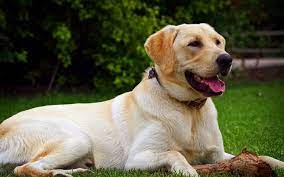
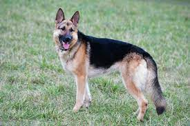
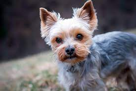
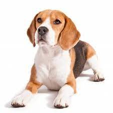
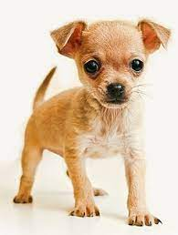

Los Tipos De Razas De Perros
Primero
- Inicio
Los primeros perros surgieron en Europa hace más de 18.000 años a partir de lobos domesticados por los humanos cazadores-recolectores, según un estudio de investigadores de la Universidad de California en Los Angeles (Estados Unidos) que publica esta semana la revista Science . La investigación se basa en análisis genéticos comparados de lobos y perros de todos los continentes, y apunta que la domesticación inicial de los perros se produjo en Europa (y no en África o Asia como habían indicado otros estudios) y bastante antes de lo que se creía hasta ahora.
Para explorar la complicada historia evolutiva de los perros, el equipo liderado por Olaf Thalmann, compararon el ADN mitocondrial de una amplia variedad de razas de perros y lobos modernos con a ADN mitocondrial de fósiles caninos de decenas de miles de años de edad. Este sistema de análisis ha permitido explorar relaciones genéticas de manera más exacta que las técnicas tradicionales de estudio de fósiles.
Los científicos descubrieron que las secuencias genéticas de todos los perros modernos tienen características genéricas similares a los antiguos perros y lobos europeos. En cambio, los lobos fuera de Europa no tienen ninguna característica genética que los relacione directamente con los perros modernos, un dato que indica el origen único de los perros en los lobos europeos, según el articulo publicado en Science.
Nuevos estudios genéticos
"Nuestro estudio indica que perros actuales no tienen características genéticas que permitan relacionarlos con los lobos actuales, en cambio si que tienen muchas similitudes con el ADN de los lobos antiguos de Europa", ha indicado Robert Wayne, uno de los responsables de la investigación.
Dado que los fósiles de perros usados en este estudio (los fósiles de perro más antiguos de los que se tenga registro) datan de hace entre 19.000-32.000 años, cuando la población cazadora-recolectora era dominante, Thalmann y su equipo sugieren que los cazadores-recolectores europeos podrían haber comenzado el proceso de domesticación canina.
Los autores sugieren que los lobos salvajes podrían haberse acercado a los humanos cazadores-recolectores atraídos por los restos de carne y huesos que dejaban después de su alimentación. El trabajo de Thalmann y colegas contradice la hipótesis planteada por otros expertos hasta ahora que indica que la domesticación de los perros se produjo cuando los humanos se habían ya especializado en la agricultura, y los lobos se acercaban a las aldeas en busca de restos de comida.
.
- ¿Que son las razas?
En biología, raza se refiere a los grupos en que se subdividen algunas especies sobre la base de rasgos fenotípicos, a partir de una serie de características que se transmiten por herencia genética.1 El término raza comenzó a usarse en el siglo XVI y tuvo su auge en el siglo XIX, adoptando incluso una categoría taxonómica equivalente a subespecie. En 1990, el Congreso Internacional de Botánica eliminó el valor taxonómico de raza. A pesar de ello, su uso se mantiene en la lengua común y es muy frecuente cuando se trata de animales domésticos.
En el caso del ser humano (Homo sapiens) algunos especialistas afirman que es inadecuado el uso del término raza para referirse a cada uno de los diversos o diferentes grupos humanos,2 y se considera que es más apropiado utilizar los términos etnia o población para definirlos. Más aún, los científicos consideran que para referirse a seres humanos, biogenéticamente, las «razas» no existen,3 tratándose solo de interpretaciones sociales.4
.
- Tipos de raza
Aqui veremos los tipos de raza mas comunes en los hogares:
1# Labrador Retriever
Probablemente no sea una sorpresa encontrar esta raza en la primera posición ya que es la elección mayoritaria de muchas familias. Es un perro muy paciente, cariñoso y una de las razas de perros más inteligentes. Pueden llegar a pesar 30 kilos y es posible que necesite un poco de entrenamiento, sobre todo para calmar su alta dosis de energía. Es una raza muy juguetona e incansable por lo que es ideal para familias con niños.

2# Pastor alemán
El perro policía por excelencia también es usado por los cuerpos de bomberos para rescates. Sus antepasados se dedicaban al pastoreo. Una de las razas de perros más populares del mundo debido a su fortaleza e inteligencia. Es un excelente guardián. Esta raza suele sufrir de displasia de cadera, por lo que es recomendable que la alimentación cachorro pastor alemán sea la adecuada para prevenir esta enfermedad.

3# Yorkshire terrier
Originaria de Escocia, esta diminuta raza parece dulce y achuchable, pero no te dejes engañar por su apariencia. Son perros muy territoriales, quizá debido a que en sus orígenes se dedicaban a cazar ratones. Su tamaño los hace ideales para vivir en pisos o espacios reducidos. Aunque en general son afectuosos, también pueden llegar a ser agresivos y desconfiados. Su esperanza de vida es larga, ya que muchos de ellos llegan a vivir más de 18 años.
Happets Comida Personalizada

4# Beagle
Los orígenes de esta raza datan de hace más de 2.000 años, aunque sus características actuales se desarrollaron en el Reino Unido durante el siglo XIX. Es un perro muy inteligente que se utiliza para rescates en montaña. Otra de las características de este pequeño tricolor es su sociabilidad. Son perros muy simpáticos y divertidos que harán las delicias de los niños. Pero ¡cuidado! Porque a cabezotas no les gana nadie, y debido a su agudo sentido del olfato es posible que si no va atado desaparezca siguiendo un olor. Los problemas de salud más comunes en esta raza son la epilepsia, displasia de cadera y obesidad, ya que son muy tragones. La mejor manera de prevenir estas enfermedades es alimentarlos con pienso para Beagle preparado específicamente para las necesidades nutricionales de esta raza.

5# Golden Retriever
Otra raza que viene del Reino Unido y que es una de las favoritas de las familias con niños. Son fáciles de educar y se adaptan muy bien a las normas. Les encanta jugar y regalan cariño a diestro y siniestro, tanto que a veces pueden llegar a agobiar. Pero su alegría y su temperamento tranquilo compensan. Les encanta comer, por lo que tienden a sufrir obesidad, lo que empeora otra condición muy común en esta raza, la displasia de cadera. En Happets te podemos ayudar elaborando un pienso para Golden Retriever con ingredientes naturales y el sabor que más le guste a tu peludo.
6# Chihuahua
Considerada la raza de perro más pequeña del mundo se originó en México y desde hace unos años se ha convertido en el perro faldero por excelencia. Suelen ser cariñosos, pero a la vez muy celosos de sus amos, y a pesar de su tamaño no tienen inconveniente en enfrentarse a otros perros mucho más grandes. Precisamente debido a su tamaño, se ha convertido en una de las razas de perros más populares. El ladrido del Chihuahua es muy agudo, y puede llegar a ser molesto. En general es una raza frágil que necesita entrenamiento para adquirir fortaleza, por eso es necesario que caminen, aunque lo habitual es que los dueños los lleven en brazos. La comida para Chihuahua debe contener los nutrientes necesarios para prevenir deformaciones de cadera, una enfermedad genética muy propensa en esta raza. También tienden a sufrir de epilepsia.

- Curiosidades
En España hay unas 13 millones de mascotas registradas, según datos de la Red Española de Identificación de Animales de Compañía (REIAC), y para cada familia su mascota es única. Y de esta cifra, el 89% lo representan los perros, seguidos de los gatos. Además, el gasto medio por cada animal de compañía supera los 1.200 euros al año. De los perros nos interesa saberlo todo para poder proporcionarles una vida feliz: educarles bien, darles la mejor alimentación posible.
Hay que tener en cuenta que se estima que humanos y perros conviven desde hace unos 3.000 años.
- Existen más de 300 razas de perros en la actualidad
En primer lugar, hay que tener en cuenta que existen más de 300 razas de perros en la actualidad. De hecho, la aproximación más oficial es la que da el organismo mundial canino Federación Cinológica Internacional, que estima que existen 343 razas de perros distintas en nuestro planeta. Sin embargo, esto no se queda aquí. Los expertos reconocen que el número de razas caninas crece cada año, y que, de hecho, este número podría ser mayor.
- La nariz de los perros equivale a su huella dactilar
También resulta curioso que así como los seres humanos pueden ser identificados por sus huellas dactilares, los perros solo pueden ser identificados por las impresiones de la nariz. Muy importante tener en cuenta que cada perro tiene una huella de nariz que resulta única e intransferible.
- Los perros odian algunas cosas de sus humanos
Los perros odian algunas cosas de sus humanos y la explicación es que al tener los sentidos de la audición y el olfato mucho más sensibles, lo que les ocurre es que les molestan profundamente los gritos y los olores fuertes. Necesitamos conocer la condiciones naturales de nuestras mascotas para poder brindarles el mejor entorno posible.
7. Los perros pueden detectar las enfermedades
Muy importante y muy curioso el hecho de que los perros sean capaces de detectar enfermedades o embarazos. En primer lugar, no hay evidencia científica que explique por qué los perros pueden percibir de antemano un embarazo. No obstante, hay gran cantidad de casos que prueban que es así. Esto tiene que ver sobre todo con que los perros, por su olfato, son capaces de percibir los cambios en las hormonas y feromonas de las mujeres embarazadas.